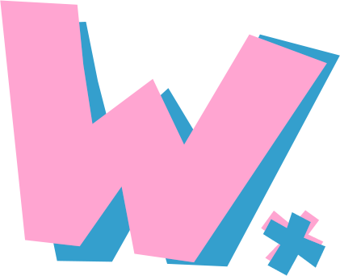

Examples
(current)
Source Code
Compile me some Waxx!
JavaScript
Python
Haxe
Run this code
class Fibber o currentNumber = 1 o previousNumber = 1 func next(nIterations) if nIterations is 0 return my currentNumber o currentNumberBackup = my currentNumber my currentNumber = my currentNumber + my previousNumber print | 'At:' + my currentNumber my previousNumber = currentNumberBackup return my next(nIterations - 1) o fibber = new Fibber() alert | fibber.next | 4
Compile your code first!